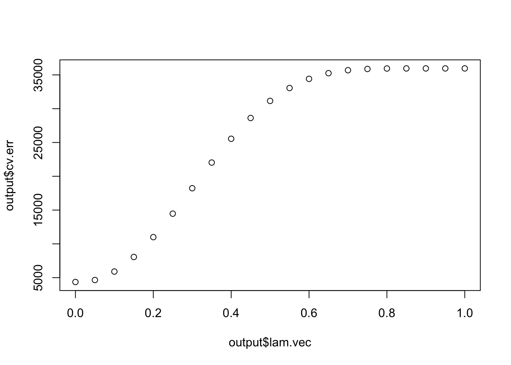

In this script, we compare CorShrink with positive definite sparse covariance matrix estimation due to Rothman et al. We use the PDSCE package for this purpose.
library(PDSCE)gene <- "ENSG00000125414" ## update and rerun to see the plots for your geneThe number of samples per tissue
common_samples <- get(load("../output/common_samples.rda"))gene_names <- as.character(read.table(file = "../data/GTEX_V6/gene_names_GTEX_V6.txt")[,1])
gene_names_1 <- as.character(sapply(gene_names, function(x) return(strsplit(x, "[.]")[[1]][1])))
person_label=read.table("../data/GTEX_V6/person_identifier_labels_with_numbers.txt");
samples_id <- read.table(file = "../data/GTEX_V6/samples_id.txt")[,1]
samples_person <- sapply(samples_id, function(x) return(paste0(strsplit(as.character(x), "-")[[1]][1:2], collapse ="-")))
tissue_labels <- read.table(file = "../data/GTEX_V6/samples_id.txt")[,3]
unique_persons <- unique(samples_person)
unique_tissues <- unique(tissue_labels)We load the sample correlation matrix and the CorShrink matrix.
cor_result <- get(load("../output/cor_tissues_non_ash_voom_pearson.rda"))
cor_result[is.na(cor_result)] = 0
ash_cor_result <- get(load("../output/ash_cor_only_voom_pearson_normal_gtex_tissues.rda"))numg <- match(gene, gene_names_1)
cor_mat <- diag(1, 53) + cor_result[,,numg]
col=c(rev(rgb(seq(1,0,length=1000),1,seq(1,0,length=1000))),
rgb(1,seq(1,0,length=1000),seq(1,0,length=1000)))
image(cor_mat[order_index, order_index],
col=col, main=paste0("sample corr: "), cex.main=2,
xaxt = "n", yaxt = "n", zlim=c(-1,1))
axis(1, at = seq(0, 1, length.out = 53), labels = unique_tissues[order_index], las=2, cex.axis = 0.5)
axis(2, at = seq(0, 1, length.out = 53), labels = unique_tissues[order_index], las=2, cex.axis = 0.5)numg <- match(gene, gene_names_1)
ash_cor_mat <- ash_cor_result[,,numg]
col=c(rev(rgb(seq(1,0,length=1000),1,seq(1,0,length=1000))),
rgb(1,seq(1,0,length=1000),seq(1,0,length=1000)))
image(as.matrix(ash_cor_mat)[order_index, order_index],
col=col, main=paste0("corshrink: "), cex.main=2,
xaxt = "n", yaxt = "n", zlim=c(-1,1))
axis(1, at = seq(0, 1, length.out = 53), labels = unique_tissues[order_index], las=2, cex.axis = 0.5)
axis(2, at = seq(0, 1, length.out = 53), labels = unique_tissues[order_index], las=2, cex.axis = 0.5)cor_mat_pd <- Matrix::nearPD(cor_mat, corr=TRUE)
cor_mat_pd <- as.matrix(cor_mat_pd$mat)lam <- 0.1
pd <- pdsoft(cor_mat_pd, lam = lam)pd_cor_mat <- cov2cor(pd$sigma)
col=c(rev(rgb(seq(1,0,length=1000),1,seq(1,0,length=1000))),
rgb(1,seq(1,0,length=1000),seq(1,0,length=1000)))
image(as.matrix(pd_cor_mat)[order_index, order_index],
col=col, main=paste0("pdsoft:", expression(lambda), "=", lam), cex.main=2,
xaxt = "n", yaxt = "n", zlim=c(-1,1))
axis(1, at = seq(0, 1, length.out = 53), labels = unique_tissues[order_index], las=2, cex.axis = 0.5)
axis(2, at = seq(0, 1, length.out = 53), labels = unique_tissues[order_index], las=2, cex.axis = 0.5)lam <- 0.3
pd <- pdsoft(cor_mat_pd, lam = lam)pd_cor_mat <- cov2cor(pd$sigma)
col=c(rev(rgb(seq(1,0,length=1000),1,seq(1,0,length=1000))),
rgb(1,seq(1,0,length=1000),seq(1,0,length=1000)))
image(as.matrix(pd_cor_mat)[order_index, order_index],
col=col, main=paste0("pdsoft:", expression(lambda), "=", lam), cex.main=2,
xaxt = "n", yaxt = "n", zlim=c(-1,1))
axis(1, at = seq(0, 1, length.out = 53), labels = unique_tissues[order_index], las=2, cex.axis = 0.5)
axis(2, at = seq(0, 1, length.out = 53), labels = unique_tissues[order_index], las=2, cex.axis = 0.5)lam <- 0.5
pd <- pdsoft(cor_mat_pd, lam = lam)pd_cor_mat <- cov2cor(pd$sigma)
col=c(rev(rgb(seq(1,0,length=1000),1,seq(1,0,length=1000))),
rgb(1,seq(1,0,length=1000),seq(1,0,length=1000)))
image(as.matrix(pd_cor_mat)[order_index, order_index],
col=col, main=paste0("pdsoft:", expression(lambda), "=", lam), cex.main=2,
xaxt = "n", yaxt = "n", zlim=c(-1,1))
axis(1, at = seq(0, 1, length.out = 53), labels = unique_tissues[order_index], las=2, cex.axis = 0.5)
axis(2, at = seq(0, 1, length.out = 53), labels = unique_tissues[order_index], las=2, cex.axis = 0.5)lam <- 1
pd <- pdsoft(cor_mat_pd, lam = lam)pd_cor_mat <- cov2cor(pd$sigma)
col=c(rev(rgb(seq(1,0,length=1000),1,seq(1,0,length=1000))),
rgb(1,seq(1,0,length=1000),seq(1,0,length=1000)))
image(as.matrix(pd_cor_mat)[order_index, order_index],
col=col, main=paste0("pdsoft:", expression(lambda), "=", lam), cex.main=2,
xaxt = "n", yaxt = "n", zlim=c(-1,1))
axis(1, at = seq(0, 1, length.out = 53), labels = unique_tissues[order_index], las=2, cex.axis = 0.5)
axis(2, at = seq(0, 1, length.out = 53), labels = unique_tissues[order_index], las=2, cex.axis = 0.5)library(softImpute)
impute_method <- "svd" ## other option tested is "als"person_tissue_genes <- get(load("../output/person_tissue_genes_voom.rda"))numg <- grep(gene, gene_names_1)
mat <- person_tissue_genes[,,numg]
matc=biScale(mat,col.scale=FALSE,row.scale=FALSE,trace=TRUE)## Iter 1 Total Changes 789.0558
## Iter 2 Total Changes 1.244273
## Iter 3 Total Changes 0.03444363
## Iter 4 Total Changes 0.003300654
## Iter 5 Total Changes 0.0005117754
## Iter 6 Total Changes 8.766135e-05
## Iter 7 Total Changes 1.528621e-05
## Iter 8 Total Changes 2.676274e-06
## Iter 9 Total Changes 4.690897e-07
## Iter 10 Total Changes 8.225103e-08
## Iter 11 Total Changes 1.442384e-08
## Iter 12 Total Changes 2.529525e-09
## Iter 13 Total Changes 4.436122e-10fits3=softImpute(matc,rank.max=25,lambda=1,type=impute_method)
fitted_mat <- complete(mat,fits3,unscale=TRUE)output = pdsoft.cv(fitted_mat)
plot(output$lam.vec, output$cv.err)
output$best.lam## [1] 0pd_cor_mat <- cov2cor(output$sigma)
col=c(rev(rgb(seq(1,0,length=1000),1,seq(1,0,length=1000))),
rgb(1,seq(1,0,length=1000),seq(1,0,length=1000)))
image(as.matrix(pd_cor_mat)[order_index, order_index],
col=col, main=paste0("pdsoft:", expression(lambda), "=", lam), cex.main=2,
xaxt = "n", yaxt = "n", zlim=c(-1,1))
axis(1, at = seq(0, 1, length.out = 53), labels = unique_tissues[order_index], las=2, cex.axis = 0.5)
axis(2, at = seq(0, 1, length.out = 53), labels = unique_tissues[order_index], las=2, cex.axis = 0.5)But this is on imputed data, the original one looks like
lam <- 0
pd <- pdsoft(cor_mat_pd, lam = lam)pd_cor_mat <- cov2cor(pd$sigma)
col=c(rev(rgb(seq(1,0,length=1000),1,seq(1,0,length=1000))),
rgb(1,seq(1,0,length=1000),seq(1,0,length=1000)))
image(as.matrix(pd_cor_mat)[order_index, order_index],
col=col, main=paste0("pdsoft:", expression(lambda), "=", lam), cex.main=2,
xaxt = "n", yaxt = "n", zlim=c(-1,1))
axis(1, at = seq(0, 1, length.out = 53), labels = unique_tissues[order_index], las=2, cex.axis = 0.5)
axis(2, at = seq(0, 1, length.out = 53), labels = unique_tissues[order_index], las=2, cex.axis = 0.5)Note that under the CV chosen \(\lambda\), we practically get no shrinkage. This tells us that this method is not suitable.
This R Markdown site was created with workflowr